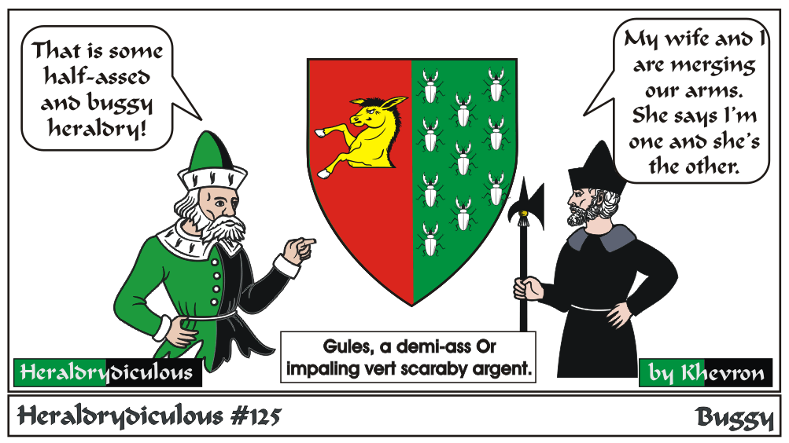
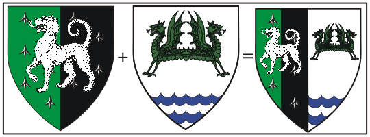
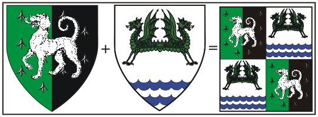
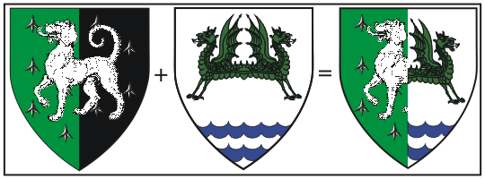

Since the subject of spousal units came up, I should talk about impaling myself (re-arrange/add comma's to suit).
Impaling is something done in period but is not allowed in SCA Heraldry. It is a merging of two houses, and the changing
of the arms to show both original arms per pale one half each side, the husband on the dexter, the wife on the sinister,
or quartered, husband in dexter-chief and sinister base. In period, impaling was done and shown only in times of peace
(Why? Only the male is out on the field of battle, and the wife's arms are still her father and/or brother's on the field).
Similarly, 'dimidiating' merges arms, but it is done by 'chopping' the original arms in half however they turned out.
It's frightening enough in period style heraldry, where many arms are simple single beasts or ordinaries. SCA dimidiations would be truly scary.
Both of these are referred to as 'Marshalling', which combined two or more arms to show marriage, rank or position.
Here is an example using my and my wife's arms using impaling:

Here is an example using my and my wife's arms using impaling quarterly:

Here is an example using my and my wife's arms using dimidiation:

Don't forget, this is NOT allowed (or at least, not registerable) in SCA Heraldic practice.
RFS: PART XI - PRESUMPTUOUS
3. Marshalling. - Armory that appears to marshall independent arms is considered presumptuous.
My arms (Per pale vert and sable all semy of caltrops a talbot passant argent.) are an example of using the per pale field division which is NOT marshalling, as it has a charge (the talbot) over both sides of the field. Similar overall charges can render the quarterly field division registerable, but designs can easily be tripped up by the anti-marshalling rule quite easily.
e-mail: 
Back to Khevron's Heraldry Page